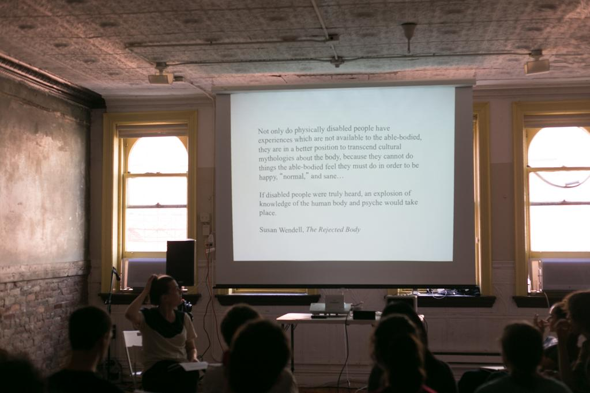
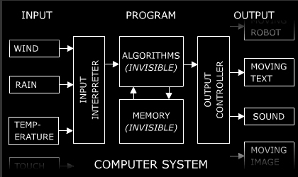

Diploma in Apple Development üçéüë©ü誂Äçüíª: Coding One: Lecture 1: Introduction.
Back to slide index.
üëãüèª Hi! I'm
Joel. My pronouns are he/him. I'm 43 and I live in London near Epping Forest with my fiancée and one cat.
Welcome to the Creative Computing Institute!
Welcome to the Diploma in Apple Development üçéüë©ü誂Äçüíª!
By the end of this lecture, we'll have learnt about:
- How to confirm your attendance in class by using the Seats Mobile App.
- Introduction to the course and each other via the Diploma homepage, GitHub readme.md and the GitHub wiki.
- How to make use of the Disability services at CCI.
- How to make use of the Library services at CCI.
- How you can get support around the cost of living crisis.
- Selection of course representatives.
- 10 thoughts for the Future.
- My expectations of you through this year.
- Tutorials - every Monday morning.
- Important methods for succeeding on this course (and in general)
- My background.
- What is Creative Computing?
- What are we going to learn?
- Other coding resources.
- Some situating yourself in the world resources.
- Brain exploding resources.
- What are we going to make?
- Homework!
First, are you all on the CCI Slack? If so, let's move on to confirming your attendance in this class! This will be your responsibility to do in every class that you attend. If you miss classes, you will be contacted by the CCI admin team. This is important not just for your learning, but most importantly for your welfare.
- Download the Seats Mobile app from the iOS app store.
- Login with your UAL ID.
- Say yes to all the permission requests - notifications, Bluetooth (make sure it's turned on) and location.
- Then you should be able to simply check in.
- If you get stuck, message me on Slack for Student Guide or a video guide.
Next, let's go around the room and introduce ourselves, with how you like to be addressed, how you are feeling today and which BA you are on at UAL.
Let's take a look at the
Diploma homepage, GitHub readme.md and finally the GitHub wiki.
Please send me your GitHub ID's on Slack and I'll add you to the GitHub, so that you can edit your own introduction. Don't forget to find your Wu-Tang name! I'll demonstrate how to do that now.
How to make use of the Disability services at CCI. You'll have already seen this on the
GitHub readme.md Don't wait until to your Masters to get support like I did. Support is available - make use of it, you'll be glad you did. Our main contact for the Apple Diploma is Becky Keen: b.keen@arts.ac.uk.
Are any of you interested in becoming the course rep? We must recruit two as by 11th October 2023! Who's interested? Slack me if you are - great for your CV. No voting, just volunteering.
My expectations of you through this year:
- I expect you to be in person at CCI on the days that you have lectures - Tuesdays, Thursdays and Fridays.
- Make use of the other resources here at CCI. The technicians, the researchers the other lecturers.
- I expect you to be checking the CCI Slack at least once every day (apart from weekends). Download the iOS Slack app. Right now if you haven't already.
- In terms of what you are going to make - by the end of this year I expect you to have created a pair of apps on the app store - one in a team, the other on your own. This will be real apps! I'm excited and I hope you are too.
Tutorials - every Monday morning. Tutorials are every
Monday morning from 1030-1300 on the CCI Slack. They are 20 minutes long and can be about anything you like - the course, how you are, challenges you are having, ambitions, career advice, music selections. Whatever you like. I've got over 20 years of experience doing interesting things with computers, so make use of that! Let's look at the schedule for next Monday and the one after.
Important methods for succeeding on this course (and in general)
Some things to keep in mind:
- üêü Dory
- üõπ Henrick Kniberg on making skateboards
- ⛑ Cassie Robinson's thoughts
- üíÄ Chuck Wendig on being a magic skeleton
- üåä David Bowie on being out of your depth
- üì∏ Yohji Yamamoto on copying
- üêå On going slow
- üôâ Susan Wendell on hearing disabled people
- ü¶Ü A rubber duck and ü™±üçé being a worm inside Apple

Henrick Kniberg on how to make a car. In other words, if you want to make a car, make a skateboard, then a scooter, then a bicycle, then a motorbike and THEN a car. I want you to make lots of skateboards.

Just a little out of your depth is the right place to be.

Just try. As soon as you try you are way ahead of most other people.

Susan Wendell wrote powerfully about disability and feminism. What explosion of knowledge could you make with your life?
To help you in this, I've brought you your very own worm (just as good as a duck to speak to (-;) in an Apple. I want you to be like this! I want you to burrow into the Apple ecosystem and make new, beautiful, caring and playful apps that you want and you want to make for other groups that are important to you. Who might those be?
My Background
üè¥Û†ÅßۆŢۆÅ∑ۆŨۆÅ≥Û†Åø Wales and being bored.
üßòü誂Äç‚ôÄÔ∏è Teaching and psychic load and meditation.
What you are we going to learn in this next year?
We are going to learn about Creative Computing - a blend of Computational Thinking and Creative Coding.
What is Computational Thinking?
- To learn how see problems at many levels (abstraction), break down problems (decomposition), find the order in them (pattern recognition), make solutions using a series of steps (algorithms) and realise that you might be able to use that solution in lots of areas (generalisation).
- Most of all, to learn how to be autodidacts.
- First task: what is an autodidact?
Look it up! What did you find?
What is Creative Coding?
I believe all coding is creative, as all life is creative. Specifically, creative coding is about blending creative techniques with software engineering. I want you to learn how to write code but also how you could use computing to change your practice. You can make lots of earth credits writing software, but I'm much more interested in giving you the tools to change yourself, your practice and the world.
Next, a really important diagram.

Jim Campbell's formula for Computer Art. Realise that you can use things without understanding every aspect of them. All that computers do is process inputs into outputs. That's it.
But what are we going to learn?
Some situating yourself in the world resources:
We are in a stressful time at the moment. Here are some resources for situating yourself in the world, and how to keep going, set up a studio (if you want) and what you (maybe) should be doing:
Some brain exploding resources:
- Digital morphogenesis is the exploration of how shapes, forms, and patterns emerge in nature through the use of computational modelling and generative systems based on biological, chemical, and physical processes. It draws upon research from practically every area of the natural sciences and has applications in architecture, digital fabrication, art, engineering, biomedicine, and more.
- Wait but Why - lots of great essays on interesting things - I started with this one - Your Life in Weeks.
- Better Explained - the best site for getting explanations of Maths ideas graphically - I started with this article - Surprising Uses of the Pythagorean Theorem.
- Joscha Bach's lectures are always brilliant - lots of amazing thinking about love, the universe and what it means to be concious.
- Stanford professor Robert Sapolsky's opening lecture of the course entitled Human Behavioural Biology on how he aims to avoid categorical thinking.
- Jane Elliott's anti racist teaching.
What are we going to make?
You are going to make two apps, a caring app in a group in Product One and a playful app on your own in Product Two (with help from me all along the way). You are also going to make your own ML model in ML Two. BTW, the idea of the playful and caring approach comes
from this amazing presentation from David Graeber. More about him in a moment.
My aim is to have our final show in the Apple Headquarters in Battersea! I'm working on that as I speak. Would you like to see what students presented there last year?
Homework:
- Install Xcode on your computers.
- Install Apple Books on your computers and iPhones and get all the textbooks.
- Sign up to GitHub and message me your ID's on Slack.
- Once I've acknowledged that, you'll be able to complete filling out your part of the wiki introductions page - so send me your GitHub IDs as soon as possible.
- Sign up to the Apple Authorised Training Centre evaluation system with your UAL emails.
- Send me your Apple ID's so I can add you to our iOS development team at CCI.
- Read and watch all of The Steve Jobs archive
- Watch the David Graeber play and care video before Product One on Friday!
- A reminder: your next lecture is on Thursday morning at 0930 in room PR_B501-03 with Xiowan-Yi on Machine Learning. Be nice!
- See you this Friday, right here, at 0930.